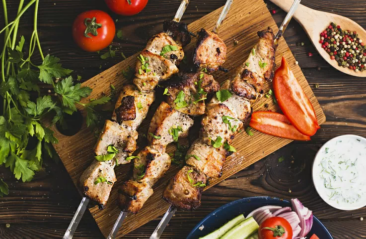
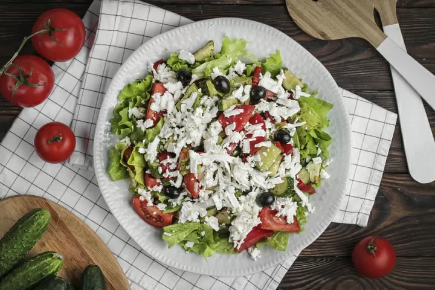
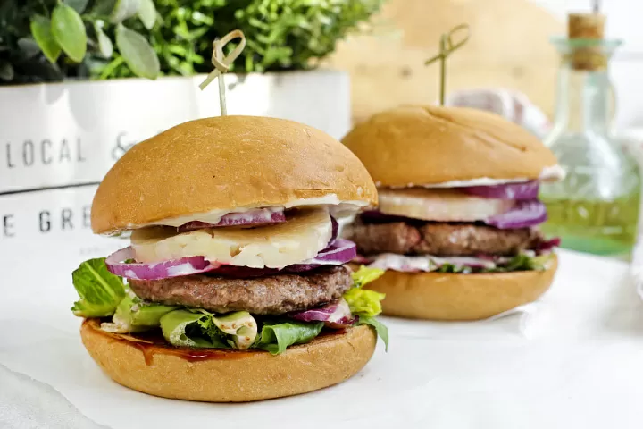
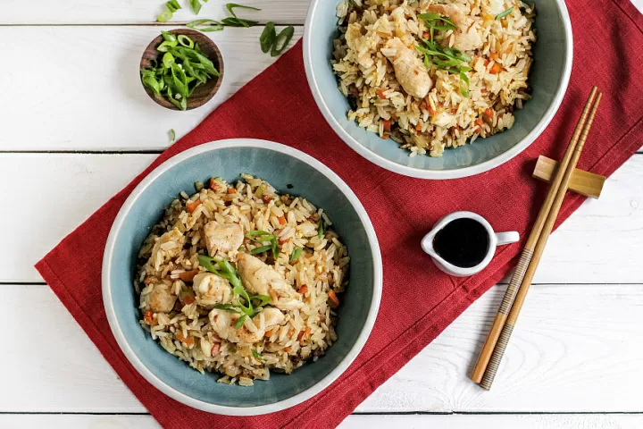
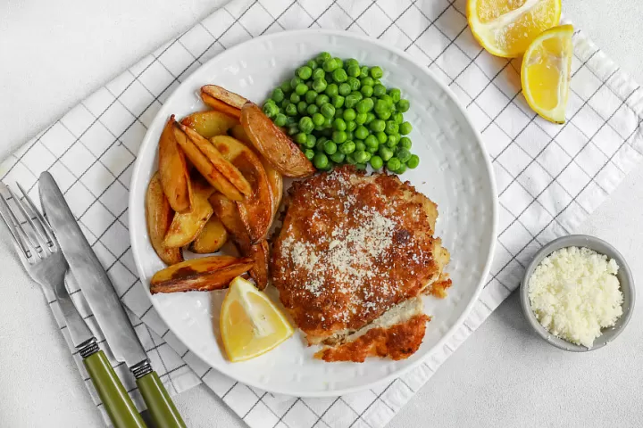
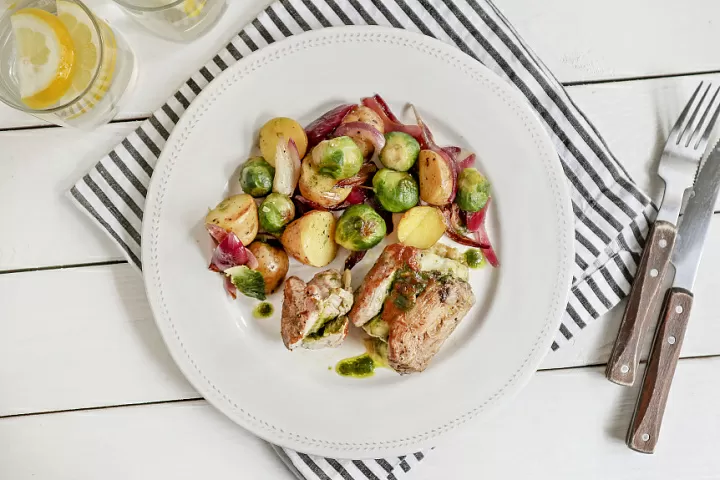

Название блюда |
Оценка блюда |
Ссылка на рецепт |
Фото блюда |
| Шашлык из свинины в кефирном маринаде со свежим овощным салатом и йогуртовым соусом |
10 |
Рецепт шашлыка |
 |
| Шопский салат с брынзой и розовыми помидорами |
9 |
Шопский салат |
 |
| Бургер «Майами» с говяжьей котлетой, ананасами и соусом Барбекю |
8 |
Бургер «Майами» |
 |
| Цыпленок по-тайски с рисом, яйцом и азиатским соусом |
9 |
Цыпленок по-тайски |
 |
| Шницель из индейки в сырной панировке с картофелем по-деревенски |
7 |
Шницель из индейки |
 |
| Свиные кармашки с моцареллой, овощами и соусом Песто |
8 |
Свиные кармашки с моцареллой |
 |